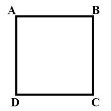

-->
Kalkulator Matematik Persegi

Rumus Luas Persegi yaitu:
L = S x S
Di mana :
L = Luas
S = Sisi
Luas Persegi
Hitung
Reset
Rumus Keliling Persegi yaitu:
K = 4 x S
Di mana :
K = Keliling
S = Sisi
Keliling Persegi
Hitung
Reset
Hasil Perhitungan Luas :
Hasil Perhitungan Keliling :